C’est à Lille que Charles de Gaulle naît le 22 novembre 1890, chez ses grands-parents maternels. Second fils d’Henri de Gaulle et de Jeanne Maillot, il a trois frères et une sœur.
Dès 1900, il fréquente le collège des jésuites de l’Immaculée Conception, rue de Vaugirard à Paris où il obtient son bac en 1907.
C’est à Antoing, en Belgique, qu’il passe l’année scolaire 1907-1908 au château des princes de Ligne, à quelques kilomètres de Tournai où son collège a émigré à la suite de la loi Combes qui expulsait les congrégations religieuses hors de France.
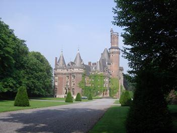
Le château des princes de Ligne à Antoing
(Photo Christian Ferrier)
En 1908, il effectue une année préparatoire à St-Cyr au collège Stanislas à Paris.
De Gaulle, soldat
Charles de Gaulle intègre l’armée le 10 octobre 1909 au 33e régiment d’infanterie à Arras (Caserne Schramm) où il doit obligatoirement effectuer une année dans un corps de troupe avant d’intégrer l’école des officiers.
Le 14 octobre 1910, il fait son entrée à Saint-Cyr. Il en sort deux ans plus tard 13e sur 211 avec le grade de sous-lieutenant. Ayant fait le choix de l’infanterie, il revient dans son ancienne caserne à Arras au 33e RI commandé par un nouveau chef de corps, le colonel Philippe Pétain.
Durant son séjour à Arras, Charles ne manquera pas de profiter de quelque permission pour se rendre à Charleroi où habite sa sœur ainée, Marie-Agnès, épouse d’un ingénieur des mines belge, Alfred Cailliau.
Été 1914, tandis que de tragiques événements se préparent, Marie-Agnès annonce à Charles qu’elle a loué une villa pour le mois d’août à Dinant où il est invité avec son frère Pierre à passer quelques jours de vacances dans la jolie cité mosane.
Hélas, le destin va en décider autrement. Charles viendra à Dinant, seul, et précisément le 15 août, premier jour de ce qui aurait dû être des vacances. La guerre, la grande guerre aura commencé et c’est là, à Dinant, précisément, par le plus grand des hasards, que Charles de Gaulle y recevra son baptême du feu et sera blessé.
L’armée allemande envahit la Belgique - L’intervention des troupes françaises
Le 4 août 1914, l’armée allemande viole la neutralité de la Belgique et envahit son territoire. Après une résistance héroïque, notamment à Liège et à Namur, l’armée belge se replie sur Anvers puis gagne l’Yser où elle se battra durant quatre années sans que l’ennemi parvienne à l’en déloger.
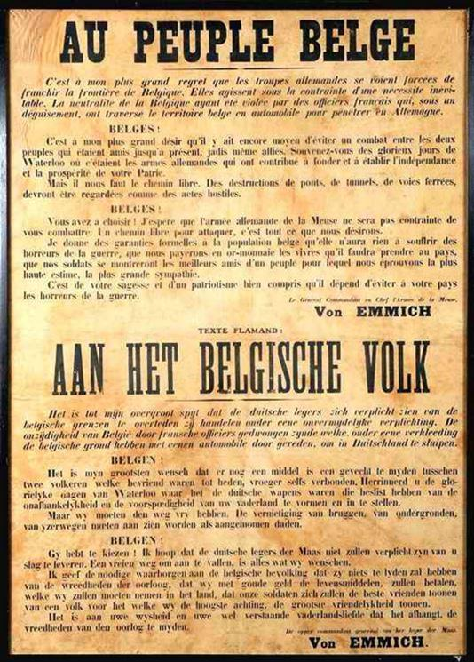Le général Joffre avait par ailleurs prévenu personnellement le roi Albert 1er que le corps de cavalerie du général Sordet (4 divisions) pénétrerait le 7 août en Belgique par les Ardennes. La veille, le 1er bataillon du 148 RI débarquait à la gare de Dinant.
Tandis que la IIe armée allemande du général von Bulow se dirige vers Namur avec quatre divisions, la IIIe armée du général baron von Hausen a pour objectif Dinant et la Meuse en direction de Charleville-Mézières.
Le 33e régiment d’infanterie entre en scène
Le 33e régiment d’infanterie auquel appartient le lieutenant Charles de Gaulle fait partie du 1er Corps d’armée commandé par le général Franchet d’Esperey. Il prend position à l’extrême gauche du dispositif de la Ve Armée, de Charleville-Mézières à Verdun.
Dès le début du conflit, Charles de Gaulle va tenir, au jour le jour, un carnet dans lequel il va consigner le déroulement des opérations ainsi que ses propres réflexions1.
Le 5 août, le 33e RI quitte Arras en train jusqu’à Hirson puis à marche forcée vers Rocroi et Fumay. Le 13 août, il passe la frontière belge aux environs de Treignes. L’accueil de la population est enthousiaste à l’arrivée des Français qu’elle prend pour des libérateurs.
Le lendemain, 14 août, à 2 heures du matin, le régiment quitte Treignes et fait mouvement en direction d’Anthée, village situé sur la route Philippeville-Dinant, à 10 km de Dinant. Le régiment établit son cantonnement dans le petit village de Serville, à 2 km d’Anthée, dans le parc du château d’Ostemerée, propriété de la famille de Ribaucourt-Stoclet2.
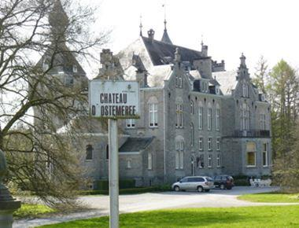
Le château d’Ostemerée où le 33 RI avait établi son cantonnement. (Photo Christian Ferrier)
Destination : DINANT !
Ce même 14 août, alors que les soldats se préparent à dîner, vers 17 heures, le 33e RI reçoit l’ordre de se diriger vers Dinant.
TROIS OBJECTIFS
1. Renforcer les éléments déjà en place, notamment dans la citadelle, en particulier ceux du 148e RI.
2. Tenir à tout prix les passages sur la Meuse : Dinant et Anseremme
3. Occuper la citadelle, place forte stratégique.
Le 14 août au soir, bien que les Allemands occupent les hauteurs de Dinant sur la rive droite, ils ne sont pas encore entrés dans la ville.
La nuit du 14 au 15 août se passe dans le calme. Les soldats se reposent tant bien que mal dans les rues de Dinant (quartier St-Médard, rive gauche).
La 11e compagnie, celle du lieutenant de Gaulle, est en réserve. Les 10e et 12e ont pour mission de franchir la Meuse et de prendre position dans la citadelle et sur les hauteurs, au nord de celle-ci.
La bataille de Dinant et le baptême du feu de Charles de Gaulle
Si, pour Charles de Gaulle, Dinant reste le lieu de son baptême du feu, c’est aussi le premier contact avec la guerre meurtrière et le choc des premiers camarades tombés au champ d’honneur.
DEUX TEXTES IMPORTANTS QUI SONT DES SOURCES DIGNES DE FOI NOUS PERMETTENT DE SUIVRE LE DÉROULEMENT DES COMBATS DE DINANT, LE 15 AOÛT 1914.
1) La relation des évènements par Charles de Gaulle lui-même, relation écrite dans ses Carnets dès le 8 septembre au cours de sa convalescence à l’hôpital militaire Desgenettes à Lyon3.
2) Le texte manuscrit émanant du ministère de la Défense concernant le 33e régiment d’infanterie4.
L’ouvrage le plus mal défendu est sans nul doute le pont de Dinant dominé par la citadelle. A supposer que l’ennemi fût maître de celle-ci, le pont se retrouverait directement sous le feu des canons disposés sur la crête des rochers et dans la forteresse même. Les éléments du 148e RI qui occupent la citadelle se voient ainsi renforcés par les 10e et 12e compagnies.
L’heure du début des combats est sensiblement différente selon que l’on se réfère à de Gaulle qui la situe à 6 heures tandis que les archives militaires mentionnent 5 h 15 du matin.
COMMENT CHARLES DE GAULLE RELATE-T-IL L’ÉVÉNEMENT5 ?
« À 6 heures du matin, boum ! boum ! la danse commence, l’ennemi bombarde Dinant avec fureur. Ce sont les premiers coups que nous recevons de la campagne. Quelle impression sur moi ? Pourquoi ne pas le dire ? Deux secondes d’émotion physique : gorge serrée. Et puis c’est tout.
Je dois même dire qu’une grosse satisfaction s’empare de moi : Enfin ! On va les voir ? J’avale un café dans un caboulot de la route et je parcours la compagnie. Les hommes ont fait le café.
Ils entendent les coups de canons et les obus qui éclatent. Ils ont commencé par être graves, puis la blague reprend le dessus et ne les quittera plus. Je plaisante avec eux.
Allons ! De ce côté-là, je parle de la frousse possible, tout ira bien ! Mais nous sommes bien mal ici. Les obus éclatent au-dessus de nos têtes. Nous nous rapprochons donc de Dinant.
La compagnie est d’abord menée derrière un pâté de maisons, puis dans la tranchée du chemin de fer, de chaque côté du passage à niveau.
Là-haut, sur la citadelle, on entend une fusillade enragée. Les balles commencent à pleuvoir sur Dinant même. Les obus font rage, mais pas grand mal. Les hommes rigolent toujours. »
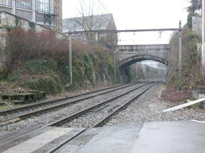
A droite du passage à niveau, la tranchée du chemin de fer qui protège les hommes du 33e RI. (photo C. Ferrier)
L’artillerie allemande est donc entrée en action alors que l’artillerie française brille par son absence. Dans la nuit, elle a pris position à l’est de Dinant et la citadelle est menacée d’être attaquée par son point le plus faible (côté Est). En réalité, le fort se trouve déjà encerclé. Très vite, face à la supériorité allemande, il apparaît que la défense de la position dominant la ville ne pourra être tenue bien longtemps.
Toute la matinée du 15 août, les combats font rage et, finalement, l’ennemi arrive aux abords de la citadelle. La retraite est ordonnée aux soldats français, contraints de redescendre la colline par les 408 marches et de retraverser le pont en courant pour gagner la rive gauche, tout en subissant de lourdes pertes.
« Voici que les débris des 10e et 12e compagnies, une poignée d’hommes blessés, ont évacué la citadelle par ordre. Le commandant Grasse est pâle et triste comme la mort. Il est resté là-bas jusqu’au bout. Ces tristes débris franchissent le pont de la Meuse aussi vite que peuvent les porter leurs membres blessés.
Il leur a fallu d’abord dégringoler l’escalier de pierre de la citadelle et plus d’un a été pris et massacré sur place par l’ennemi. La 1re compagnie, écrasée par le feu partant de la rive droite, est entraînée par le flot et tout cela reflue dans la rue du passage à niveau.6 »
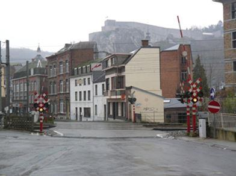
A droite du passage à niveau, la tranchée du chemin de fer qui protège les hommes du 33e RI. (photo C. Ferrier)
La 11e compagnie qui est toujours en réserve reçoit, fin de matinée, l’ordre de passer la Meuse à son tour afin de repousser l’ennemi lancé à la poursuite des Français qui battent en retraite vers la rive gauche.
« C’est à nous d’intervenir. Car nous sommes une suprême réserve destinée avec deux sections du 148e à exécuter, si l’ennemi tente de passer le pont sur les talons de nos compagnies massacrées, une contre-attaque à la baïonnette.
[…] Quelques mots aux hommes : « Attendez un peu ! La 11e va donner. On va les f… à la Meuse. » Tous sont pleins de résolution. On les conduira où on voudra.
Il faut, pour aller de la tranchée du chemin de fer où nous sommes à la rue où nous devons aller, franchir le terrible passage. Je le fais franchir quatre par quatre et au galop.
Le capitaine Bosquet nous crie : « La 11e en avant ! Sur leurs talons ! De l’autre côté du pont ! La 1re section en tête ! »
Je hurle : « Première section ! Avec moi en avant ! » et je m’élance, conscient que notre seule chance de réussite est de faire très vite avant que l’ennemi, qu’on voit refluer précipitamment, n’ait eu le temps de se retourner7. »
La première section commandée par le lieutenant de Gaulle s’élance vers le pont, baïonnette au canon. C’est alors que Charles de Gaulle est blessé à la jambe droite par un projectile vraisemblablement tiré du haut de la citadelle8.
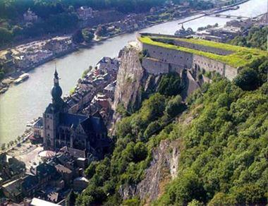
La citadelle de Dinant vue d’en haut
Par deux fois, la contre-attaque sera relancée et, par deux fois, elle sera repoussée. Décimée, ayant subi de lourdes pertes, la compagnie se retire du pont. Les soldats survivants se réfugieront plus en arrière dans les maisons abandonnées.
LE RÉCIT DE CHARLES DE GAULLE ÉCRIT QUELQUES SEMAINES PLUS TARD, LORS DE SA CONVALESCENCE, EST UN TÉMOIGNAGE PARTICULIÈREMENT INTÉRESSANT9.
« J’ai à peine franchi la vingtaine de mètres qui nous séparent de l’entrée du pont que je reçois au genou comme un coup de fouet qui me fait manquer le pied. Les quatre premiers qui sont avec moi sont également fauchés en un clin d’œil. Je tombe, et le sergent Debout tombe sur moi, tué raide. Alors c’est pendant une demi-minute une grêle épouvantable de balles autour de moi. […] Je me tiens le raisonnement suivant : « Mon vieux, tu y es ! »
Puis, à la réflexion : « La seule chance que tu aies de t’en tirer, c’est de te traîner en travers de la route jusqu’à une maison ouverte à côté par bonheur » (à une cinquantaine de mètres).
La jambe complètement engourdie et paralysée, je me dégage de mes voisins, cadavres ou ne valant guère mieux, et me voici rampant dans la rue sous la même grêle qui ne cesse pas, traînant mon sabre par sa dragonne encore à mon poignet. Comment je n’ai pas été percé comme une écumoire durant le trajet, ce sera toujours le lourd problème de ma vie. […] Enfin je parviens à la maison. Elle est pleine de gens qui, pris par la rafale, s’y sont rués en la voyant ouverte. Presque tous sont blessés.
[…] L’artillerie ennemie, jusque-là modérément harcelante, se manifeste maintenant violemment au-dessus de nos têtes et dans les rues, écrasant les nôtres sans contrepartie.
[…] Dehors la canonnade n’a pas cessé du côté de l’ennemi, mais la fusillade s’apaise. Sur la route couverte de mourants, un concert de lamentations et d’appels au secours. La bonne vieille qui habite la maison nous offre du café. Elle est à moitié folle de terreur.
Et nous passons là près d’une heure d’angoisse. L’ennemi ne vient toujours pas ! »
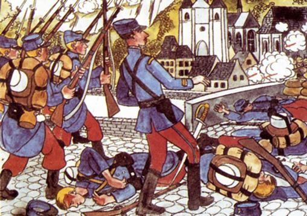
Ce dessin un peu naïf, représente le lieutenant de Gaulle s’élançant à la tête de sa section à l’assaut du pont de Dinant. Seule manque la dragonne reliant son sabre à son poignet. (Auteur inconnu)
L’artillerie française entre en action
Curieusement, l’ennemi qui n’a plus de résistance sérieuse devant lui n’en profite pas pour passer le pont et gagner la rive gauche.
Pourquoi ? Sans doute ne se rend-il pas vraiment compte de l’état de faiblesse dans lequel se trouvent les troupes françaises. Lui-même ayant perdu beaucoup d’hommes éprouve-t-il le besoin de souffler un peu. C’est l’impression du lieutenant de Gaulle qui, de son refuge provisoire, observe, impuissant, les évènements.
Mais en début d’après-midi, l’espoir va renaître. Restée jusque-là étrangement silencieuse, l’artillerie française entre enfin en action tandis que des renforts arrivent : deux bataillons du 73e RI et deux du 8e RI qui reprendront bientôt la citadelle en montant les 408 marches au départ de la place Astrid, tandis que la cavalerie française poursuivra l’ennemi par la rue Saint-Jacques en direction de Ciney.
« […] Mais voici que la canonnade française commence. Tous nous tendons l’oreille, haletants ! Les obus français passent en geignant au-dessus de nos têtes. Un homme valide grimpe sur le toit et aperçoit notre infanterie qui couronne les hauteurs à l’ouest.
L’espoir renaît dans nos cœurs. Il y a une heure de combat furieux d’une crête à l’autre !
Puis soudain sur la route de Philippeville, une dégringolade d’infanterie qui roule vers Dinant. Nous regardons. C’est le 73e qui court nous venger.
Je me précipite dehors, appuyé sur un caporal que je rencontre, et rallie en route une poignée d’hommes du 33e qui sont épars dans les maisons. Mais un officier du 73e me dit que le 33e a ordre de se rallier à Anthée, son premier cantonnement de la veille, car il n’est plus bon à grand-chose.
N’importe, je veux voir la fin. Boitant et lamentable, je me traîne jusqu’au pont de la Meuse. Notre artillerie fait rage. Il est bien temps !
Le feu de l’ennemi s’éteint fort vite et il évacue presqu’aussitôt la citadelle que le 8e, ou mieux un bataillon du 8e, accouru par une autre route plus au sud, reprend d’un élan en chantant le chant du départ. »
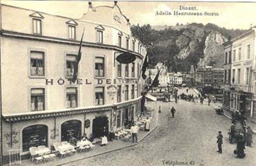
Cette photo montre bien l’endroit où Charles de Gaulle fut blessé :
« La vingtaine de mètres qui nous séparent de l’entrée du pont … »
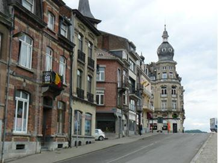
A gauche, la maison de madame Meurice, avenue des Combattants où le lieutenant de Gaulle s’est réfugié. (Photo C. Ferrier)
C’est le sergent-major Bouchez du 8e RI qui arrivera le premier à la citadelle et arrachera de la hampe le drapeau allemand et le remplacera par le drapeau français. En 1927, un monument à sa gloire sera inauguré au cimetière militaire français de la citadelle par le maréchal Pétain.
« Malgré les projectiles qui tombent encore par-ci par-là, les habitants sont sur leurs portes maintenant ouvertes et acclament les soldats. Une cinquantaine d’Allemands étaient parvenus à passer la Meuse et sont rejetés à la baïonnette dedans10. »
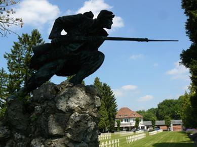
Monument l’Assaut d’Alexandre Daoust au cimetière militaire français de la citadelle.
(Photo C. Ferrier)
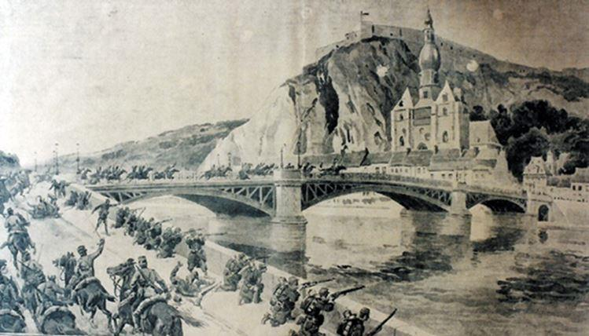
Bataille de Dinant, le 15 août 1914 (Extrait du panorama de la Guerre de 1914)
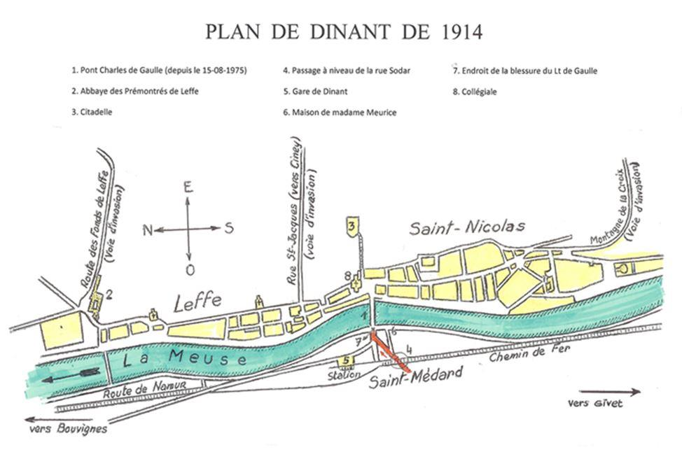
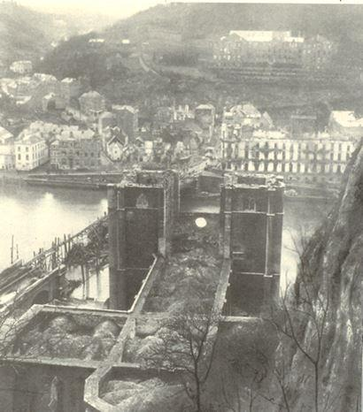 Ce qui reste du pont, de la collégiale et du quartier St-Médard
23 août 1914 et les jours suivants
Les combats meurtriers dureront jusqu’au 23 août, jour où Dinant sera victime de la barbarie teutonne : des centaines de maisons détruites, 674 morts et 400 déportés en Allemagne !
Retour vers Anthée
Fortement éprouvé par les combats de cette journée du 15 août, le 33e RI a reçu l’ordre de rallier le village d’Anthée, son premier cantonnement de la veille.
« Mais comment aller à Anthée maintenant, à 12 kilomètres d’ici ? Je ne peux pas marcher. Je me rends à la gare fort abîmée. (à 200 mètres) Il y a là plusieurs hommes du 33e, la plupart blessés, qui s’y étaient réfugiés. Je m’occupe de faire glaner dans Dinant tout ce qui y traîne du régiment en état de marcher et je les envoie à Anthée en détachement.
La nuit tombe, ma tâche est finie. […] Les paysans organisent par voitures le transport en arrière des blessés qui encombrent Dinant. Je monte dans une de nos voitures.
Nous voici à Anthée où je croyais trouver le 33e Mais non, c’est le 84e qui s’y trouve. Le 33e a reçu Surville11 comme lieu de ralliement. Ah ! ma foi tant pis ! Je n’en puis plus. Nous descendons au poste de secours du 84e. C’est l’école. Instituteurs extrêmement aimables. Je ne veux rien savoir d’autre que dormir. Deux œufs gobés ! Voici un lit. Et allons-y ! Du premier coup en plein sommeil. »
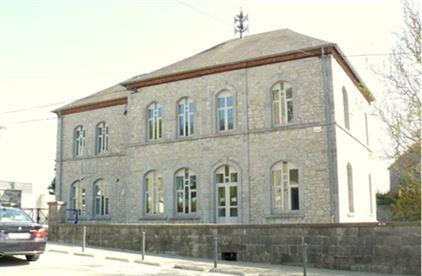
L’école communale d’Anthée - commune d’ONHAYE (Photo C. FERRIER)
Fin de la première partie – Suite et fin dans le prochain numéro de Méthode.
C.F.
NOTES ET RÉFÉRENCES
1. Charles de Gaulle, 1980, Lettres, Notes et Carnets, 1905-1918, Plon. NDLR : Charles de Gaulle arrête la rédaction de son carnet le 14 août 1914 et la reprend le 8 septembre 1914 à Lyon, au cours de sa convalescence.
2. Le comte Xavier de Ribaucourt, petit-fils du comte Adrien de Ribaucourt, ne peut confirmer la présence du 33e RI dans la propriété de ses grands-parents, en août 1914. (Témoignage du comte à l’auteur)
3. Charles de Gaulle, Lettres, Notes et Carnets, 1905-1918, Plon, 1980.
4. Journal de Marche et des Opérations – JMO - Service historique des Armées, Château de Vincennes, Paris.
5. Charles de Gaulle, Lettres, Notes et Carnets, 1905-1918, Plon, 1980, p.85
6. La rue Sodar.
7. Charles de Gaulle, 1980, Lettres, Notes et Carnets,1905-1918, Plon, p.87
8. Plaie au péroné droit avec paralysie de la sciatique par balle.
9. Charles de Gaulle, 1980, Lettres, Notes et Carnets,1905-1918, Plon, p.88
10. Ibid. pp89-90.
11. Charles de Gaulle et les historiens mentionnent toujours «Ostricourt » au lieu d’Ostemerée. Il ne peut s’agir que de la contraction du nom du hameau d’Ostemerée et du nom de Ribaucourt, propriétaire du château à cette époque, ainsi que Serville au lieu de Surville !
Partager cette page